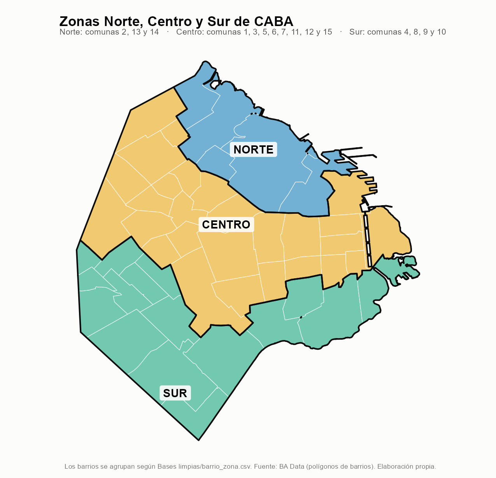

Clínica de Datos · UTDT
Cómo cambió el precio de alquilar un 2 ambientes desde 2015, en pesos de hoy, y cómo se compara con lo que ganan las personas y las familias.
Equipo: Florencia Ameri, Agustin Barclay, Nicolas Martin, Leonardo Pennesi, Celina Santellán.
Usá las flechas del teclado o los botones de abajo para avanzar.
Cronología de los cambios que marcaron el mercado de alquileres de CABA. Los períodos sombreados de los gráficos salen de estas fechas.
Zonaprop, 2 ambientes de 50 m², promedio general de CABA. Pesos constantes del (IPCBA general). Las zonas grises marcan los períodos regulatorios, entre ellos toda la vigencia de la Ley de Alquileres (de su sanción a su derogación); debajo, la variación mensual.
El mismo precio del alquiler, junto al ingreso individual medio de los perceptores y al ingreso total familiar (ITF) medio. Las tres series, en pesos constantes del . Datos trimestrales.
Fuentes: Zonaprop (alquiler), IDECBA (IPCBA, ingreso individual de perceptores, ITF).
Así se agrupan los barrios para comparar el precio del alquiler con el ingreso total familiar (ITF) de cada zona.

Zona de cada barrio según Bases limpias/barrio_zona.csv. Mapa: scripts/14_mapa_zonas.R.
Precio promedio del trimestre (Zonaprop) sobre el ITF medio. Cada zona usa el promedio de los precios de sus barrios (ponderado por m² ofertados) contra el ITF de esa misma zona. Pesos corrientes del mismo trimestre.
Fuentes: Zonaprop (precio por barrio y total), IDECBA (ITF por zona, m² ofertados). Zonas según Bases limpias/barrio_zona.csv.
Cada celda es un barrio en un mes; el color es la cantidad estimada de avisos de alquiler de 2 ambientes (los barrios van de mayor a menor oferta promedio). Se estima repartiendo el total de avisos de Zonaprop con la distribución de la oferta de IDECBA por barrio.
Fuentes: Zonaprop (total de avisos), IDECBA (m² ofertados por barrio; 43 m² por departamento). Cálculo en scripts/10_oferta_barrio.R.
Zonaprop, 2 ambientes de 50 m², en pesos constantes del . Movés el deslizador (o ▶) para recorrer los meses y pasás el mouse por un barrio para ver su precio y su variación interanual real. El rayado indica que ese mes no hay dato confiable.
Fuentes: Zonaprop (precio), IDECBA (IPCBA), BA Data (polígonos de barrios). Mapa generado por scripts/06_mapa_barrios.R.
Cambio porcentual real (pesos constantes del ) entre el precio promedio de 2016 y el de enero–septiembre de 2026. Violeta oscuro = mayor aumento; amarillo = mayor caída. Pasá el mouse por un barrio para ver sus dos promedios.
Promedios con al menos 6 meses de dato en cada período. Rayado: sin datos suficientes (Villa Gral. Mitre, Villa Real, Villa Riachuelo y Villa Soldati). Mapa: scripts/13_mapa_variacion.R.
Elegí el nivel (comuna o barrio) y la variable (precio, estaciones de subte, espacios verdes o distancia al subte). Se pueden sumar las capas de estaciones y parques, y recorrer los meses con el deslizador.
Fuentes: Zonaprop, IDECBA, BA Data. Mapa generado por scripts/09_mapa_interactivo.R.